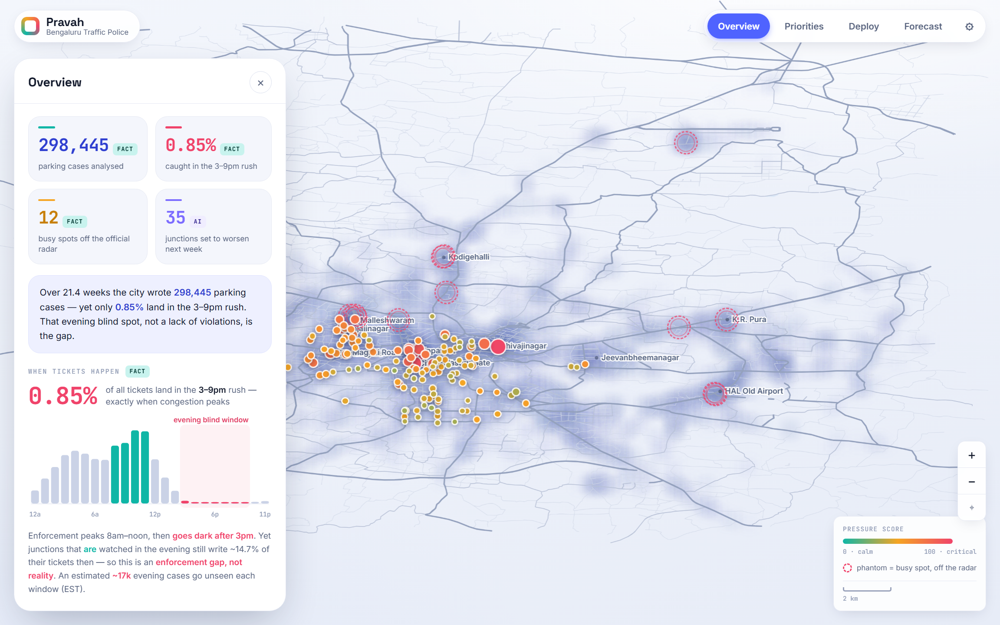
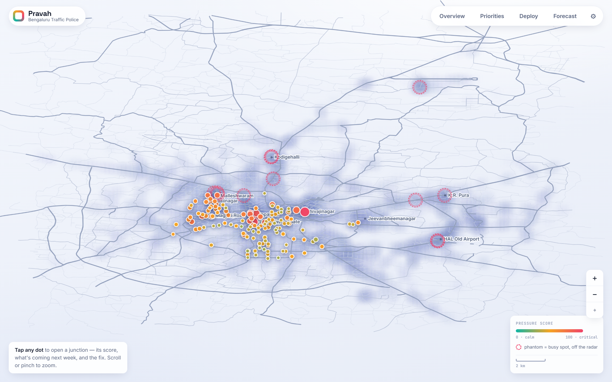
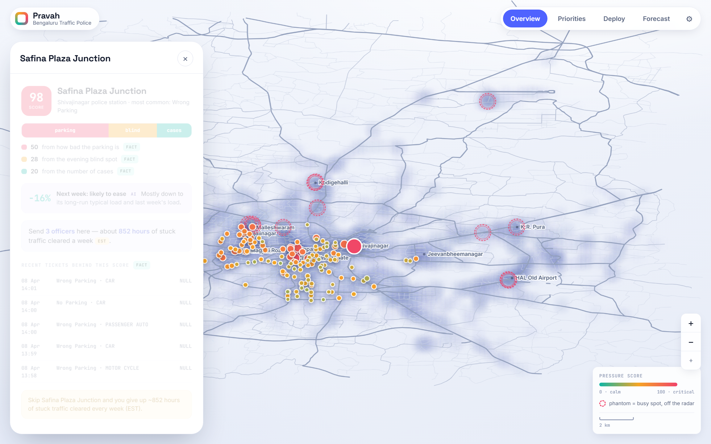
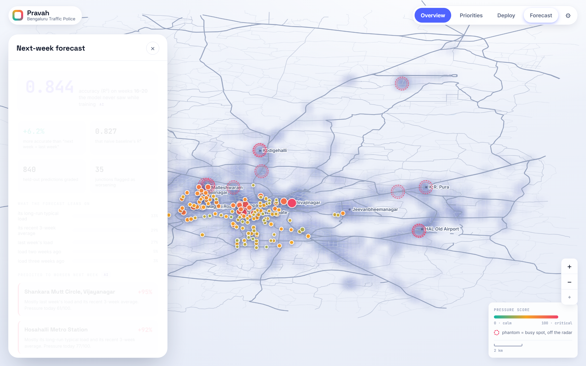
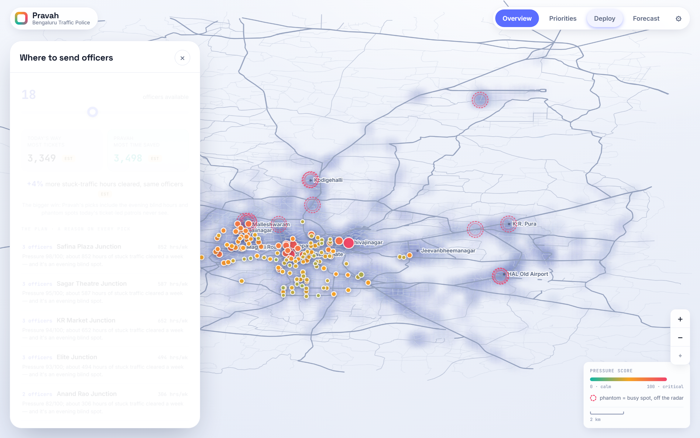

A glass-box command centre that turns Bengaluru's parking-violation data into where to send officers next week — measured in commuter-time, with a reason on every number.
of all tickets land in the 3–9pm rush — exactly when congestion peaks. Junctions that are watched in the evening still write ~15% of tickets then, so it's an enforcement gap, not reality. FACT
12 phantom hotspots — thousands of violations clustered off the official named-junction radar. FACT



All model output labelled AI/EST; the trajectory it learns from is FACT.

